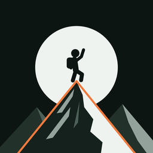
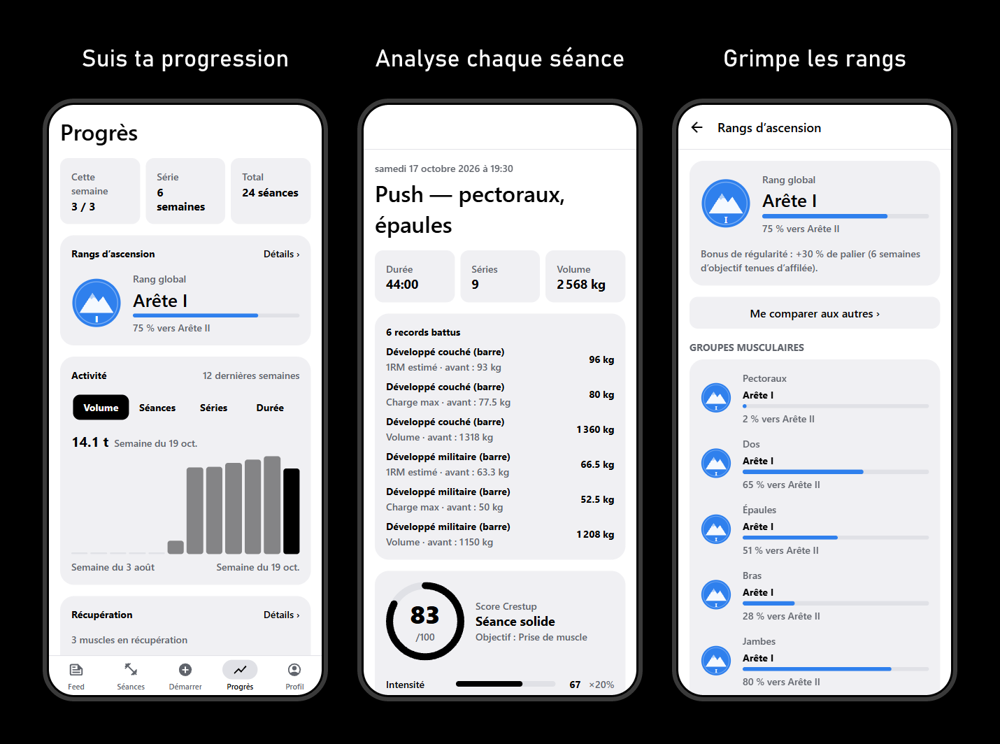

CRESTUP
Muscu, course, vélo : enregistre tes séances, analyse-les et gravis de vrais sommets, seul ou avec tes amis.
🏔️ L'Ascension
Chaque séance te fait gravir des mètres sur de vrais sommets, quel que soit ton sport : muscu, course, vélo, natation… Plus tu t'entraînes longtemps et intensément, plus tu montes.
- Ben Nevis
- Puy de Dôme
- Mont Ventoux
- Pic du Midi
- Teide
- Cervin
- Mont Blanc
- Elbrouz
- Kilimandjaro
- Denali
- Aconcagua
- Everest
Seul
12 sommets à enchaîner, du Ben Nevis (1 345 m) à l'Everest (8 849 m). Une séance d'1 h bien menée ≈ 190 m.
En cordée
Grimpe à 2 à 5 amis : vos mètres s'additionnent sur la même montagne. Choisissez ensemble le sommet suivant.
Tour du monde
Arrivé à l'Everest ? Un badge, un drapeau d'une nouvelle couleur, et c'est reparti pour un tour.

Ce que fait Crestup
Enregistre tes séances
Plus de 200 exercices, séries, charges, repos, RPE, supersets, minuteur et programmes sur plusieurs semaines.
Comprends chaque séance
Score Crestup sur 100, carte des muscles travaillés et de la récupération, records et courbes de progression.
Grimpe les rangs
Du Camp de base au Zénith, par exercice et au global. Niveaux, XP, badges et comparaison anonyme.
Séance générée pour toi
Choisis la durée, la zone et ton matériel : Crestup compose une séance adaptée à ton objectif.
Avec tes amis
Publie tes séances, likes, commentaires, défis et cordées de l'Ascension.
Tes données t'appartiennent
Fonctionne sans compte et sans réseau, sans publicité. Import Health Connect et export complet.
Installer sur Android
- Sur ton téléphone Android, appuie sur Télécharger pour Android.
- Ouvre le fichier
crestup.apkune fois téléchargé. - Si Android bloque l'installation, autorise ton navigateur à installer des applications inconnues (le téléphone te propose le réglage), puis reviens en arrière.
- Appuie sur Installer.
Crestup n'est pas encore sur le Play Store : c'est une version de test. Pour une mise à jour, télécharge simplement le nouveau fichier depuis cette page, tes données sont conservées.
Utiliser sur iPhone
- Ouvre cette page dans Safari et appuie sur Ouvrir sur iPhone.
- Appuie sur le bouton Partager (le carré avec une flèche vers le haut).
- Choisis Sur l'écran d'accueil, puis Ajouter.
- Lance Crestup depuis son icône, comme une app : il s'ouvre en plein écran.
Sur iPhone, Crestup est une version web : séances, analyse, rangs, coach et feed fonctionnent, mais pas Apple Santé ni les notifications. Tes séances sont enregistrées sur ton iPhone ; crée un compte dans l'app pour les sauvegarder en ligne. Ajoute bien Crestup à l'écran d'accueil : sinon Safari peut effacer ses données si tu ne l'ouvres pas pendant plusieurs jours.
Un avis, un bug ?
Tous les retours aident à améliorer l'app : ça prend une minute, sans compte.